01Меню
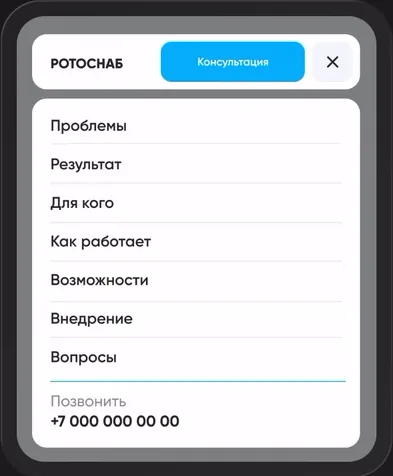
Навигация → бургер
Семь пунктов не помещаются в строку: меню открывается панелью, нажатие прокручивает к разделу.
Кейс: MES-диспетчер · веб · B2B-продукт
Путь от проблем производства к функциям системы
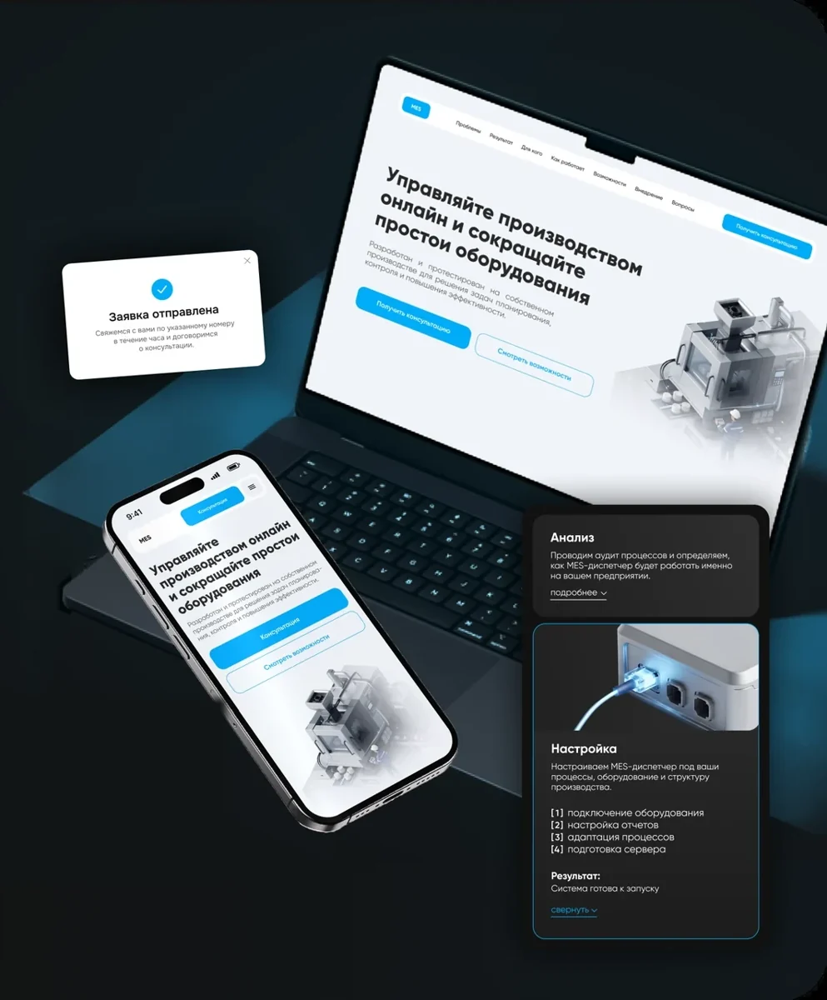
[1] Контекст и задача
MES-диспетчер — система управления производством. Компания разработала её для себя, внедрила на собственном производстве, а затем решила продавать внедрение другим предприятиям как услугу. Для продажи был только интерфейс самой программы — нужно было придумать, как клиент узнаёт о продукте и приходит за консультацией.
Задача: спроектировать лендинг, который объясняет сложный B2B-продукт людям, которые его ещё не видели, и приведёт их к заявке на консультацию.
Есть готовая программа и цель — продавать услугу. Но клиенту не на что посмотреть: продукт можно только описать словами, а доступ к системе дают после разговора с разработчиком.
Нет первого шага: клиенту не из чего понять, зачем ему система и стоит ли обращаться.
Лендинг — первый шаг пути продажи. Он объясняет, что такое MES-диспетчер, кому он нужен и что меняется после внедрения, и приводит к заявке на консультацию.
Клиент приходит на консультацию уже понимая, что получит.
Ни сайта, ни текстов, ни визуального языка — всё нужно было создавать с нуля.
Дать клиенту попробовать систему заранее нельзя, можно показать только часть.
У каждого покупателя свой вопрос, и все ответы должны уместиться на одном лендинге.
Странице нужно ответить на вопрос трёх людей сразу.
Хочет понять, где теряются ресурсы и как увеличить эффективность.
Смотрит поверхностно, ищет результат.
Контролирует эффективность всего производства.
Сравнивает с тем, как работает сейчас.
Управляет задачами и контролирует работу цеха.
Хочет видеть, с чем будет работать.
[2] Анализ и выбор подачи
Проблемы производства выяснила в обсуждениях с двумя экспертами: разработчиком диспетчера и генеральным директором. К каждой проблеме подобрала функцию, которая её решает, и только после этого писала тексты лендинга.
Самый простой путь — пересказать разделы программы. Но клиент ещё не видел продукт, и список функций ему ничего не говорит.
Планирование → Производство → Контроль → Аналитика
Страница повторяет меню программы. Чтобы понять пользу, клиент должен сам связать функцию со своей проблемой.
Проблема производства → функция, которая её решает
Клиент сначала узнаёт свою ситуацию, а затем видит, чем система на неё отвечает.
Четыре проблемы, которые назвали эксперты, и функции диспетчера, которые на них отвечают.
Простои приводят к потерям времени и снижению производительности
Замечаем отклонения до того, как они станут проблемой
Слишком много времени уходит на контроль и подготовку отчётов
Понятный план до начала производства
Нет единой картины работы производства в реальном времени
Выполнение задач в реальном времени
Сложно выявлять причины потерь и точки роста
Данные для улучшения процессов
Когда проблемы и функции были собраны, встал вопрос подачи. У каждого был свой клиент в голове и своё предложение.
Видел клиента как владельца производства: смотрит поверхностно, ему нужен смысл, а не детали.
Видел клиента как производственник: хочет видеть, с чем будет работать.
Технологичность показана оформлением, а не громкими словами в тексте.
Главные страницы системы, а не весь список того, что в ней есть.
[3] Сценарий и структура
Структуру страницы собрала как путь: от «что это?» до заявки. Целевое действие одно — «Получить консультацию», и оно доступно в любой точке страницы: в шапке, на первом экране и в форме.
Вопросы клиента идут в том порядке, в котором он их задаёт, и каждому вопросу соответствует один блок. Точки показывают, для какой роли блок важен.
С — собственникР — руководительН — начальник цехаблок важенне главный
Не каждый готов оставить заявку сразу. Поэтому на первом экране две кнопки — для тех, кто уже понял, и для тех, кто хочет сначала увидеть систему.
Клиент понял, о чём речь, и готов обсудить своё производство.
Первый экранЗаявка
Клиент хочет сначала увидеть, с чем будет работать, — и только потом решить.
ВозможностиЭтапыВопросыЗаявка
[4] Моё решение
Страница ведёт клиента по сценарию из блока 3: узнать свою проблему, увидеть результат и систему, понять, что нужно для запуска, — и оставить заявку.
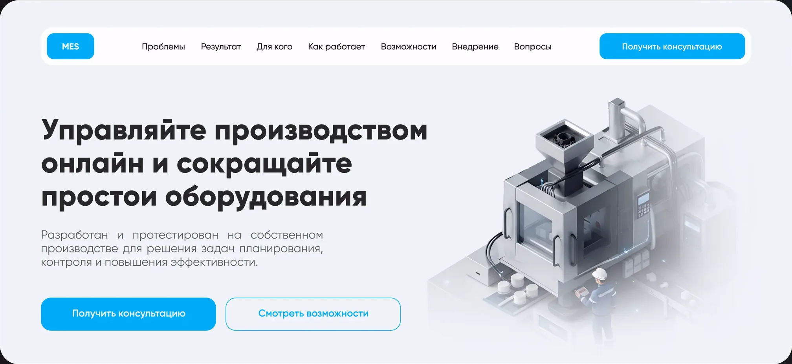
Обещание результата и два пути: «Получить консультацию» ведёт к форме заявки, «Смотреть возможности» — к интерфейсу системы для тех, кто хочет сначала увидеть продукт.
Каждое решение на странице — ответ на вопрос клиента или на позицию одного из заказчиков.
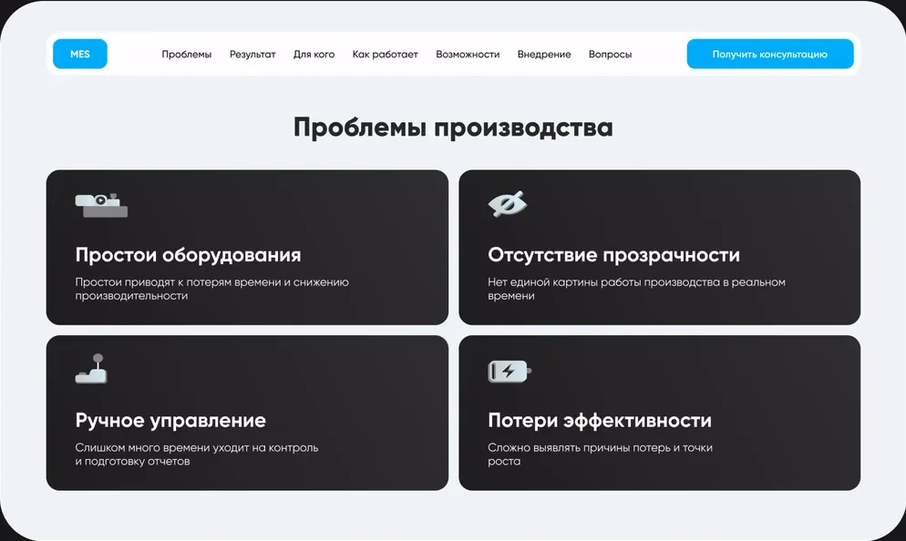
Подача «от проблем»: клиент узнаёт свою ситуацию раньше, чем видит продукт.
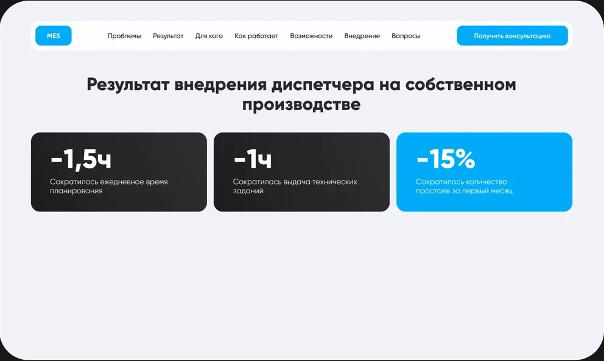
Цифры с собственного производства — ответ на вопрос «это правда работает?». Главный результат выделен цветом.
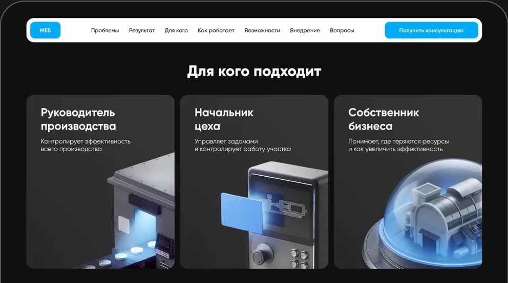
Каждая роль показана через свой рабочий инструмент, а не через атрибуты профессии.
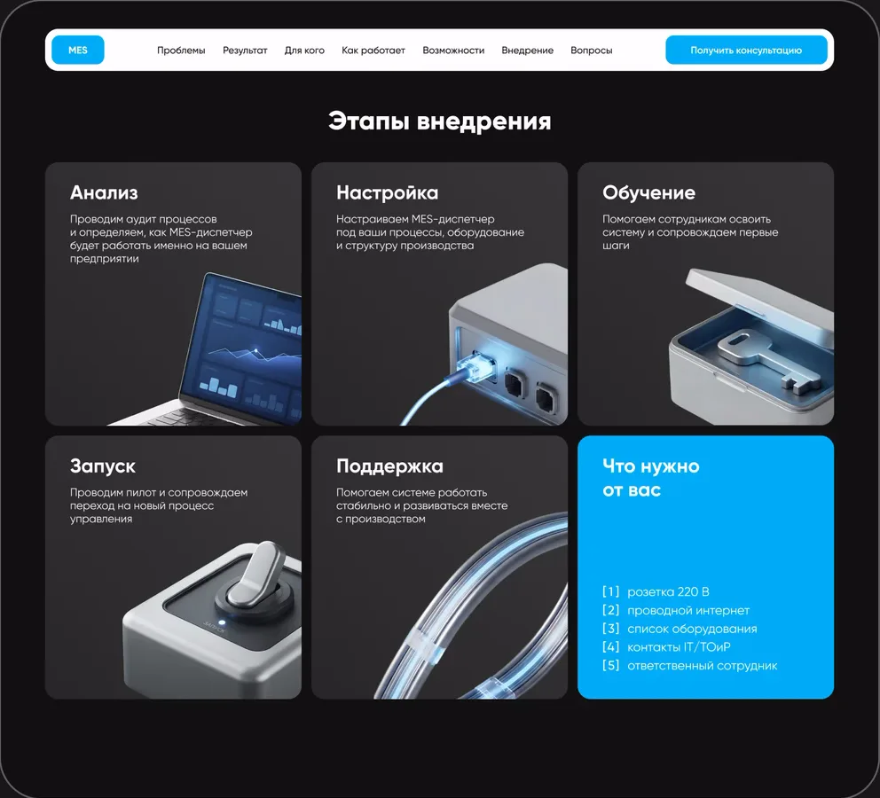
При наведении карточка меняет содержание на месте — состав работ и результат этапа, без увеличения.
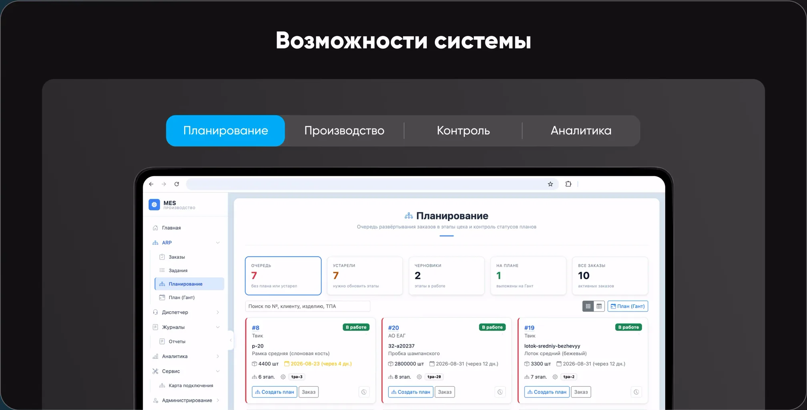
Четыре ключевых экрана вместо всей системы — компромисс между позициями директора и разработчика. Вкладки повторяют этапы работы: планирование, производство, контроль, аналитика.
У каждой роли свой главный инструмент, у каждого этапа внедрения — один объект и одна метафора. Синее свечение на всех карточках — это сам MES-диспетчер: система, которая «подсвечивает» производство.
РольОтветственностьРабочий инструментВизуальный объект
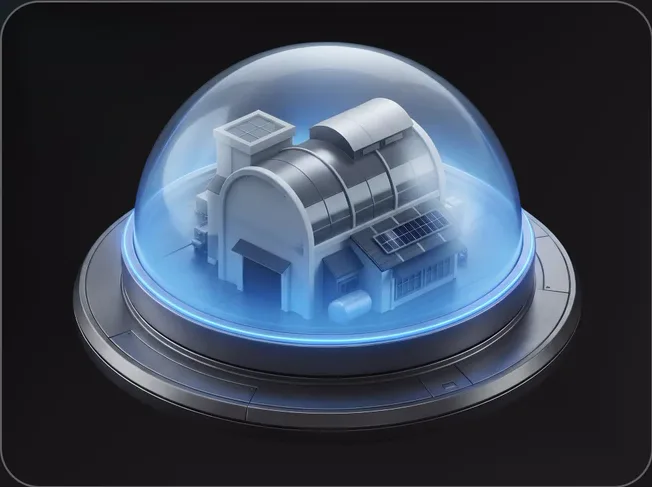
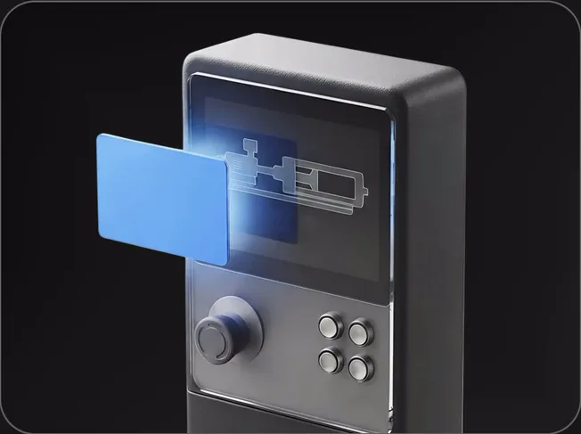
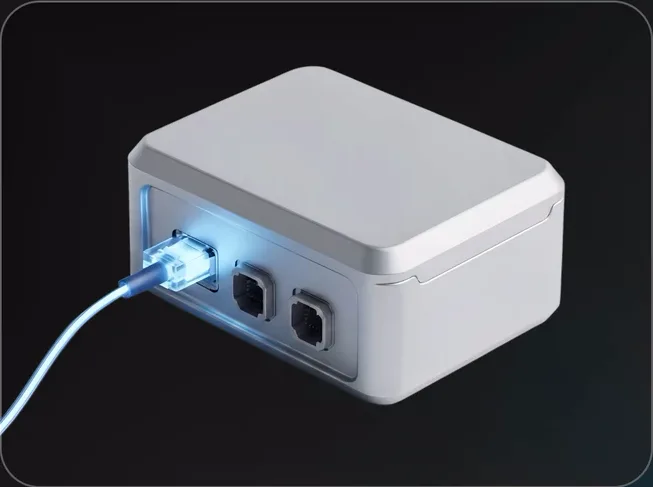
Ошибки показываются не только цветом. После отправки — подтверждение с понятным следующим шагом.
Все поля с подсказками, кнопка активна сразу.
Поле подсвечено, и прямо в нём написано, что исправить.
Чекбокс подсвечен, под ним — подсказка.
Всё заполнено, ошибок нет.
Кнопка показывает, что запрос ушёл, — повторно её не нажать.
Подтверждение с понятным следующим шагом.
Не уменьшенный десктоп, а переосмысление: то, что работает мышью, на телефоне заменено жестом пальца.
01Меню

Семь пунктов не помещаются в строку: меню открывается панелью, нажатие прокручивает к разделу.
02Возможности
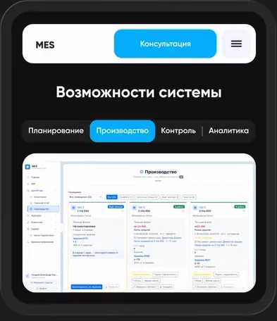
Четыре равные кнопки не помещаются: ширина по тексту, высота 44 px под палец.
03Этапы
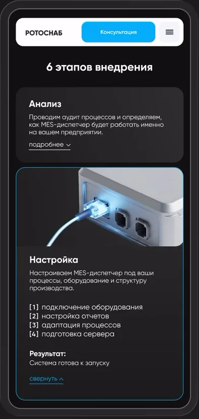
На телефоне нет курсора: карточка раскрывается по нажатию, открыта всегда одна.
[5] UI-система и итог
Пять цветов, один шрифт, единая сетка и компоненты со всеми состояниями. Поэтому мобильная версия — та же система, а не отдельный дизайн.
Цвет
#00ACF9действие / акцент / система#121212секции «решения»#F1F4F9секции «проблемы» / поля#1E1E1Eтекст#E5484Dтолько ошибки формыТипографика
Gilroy
| Уровень, px | 1440 | 390 |
|---|---|---|
| Заголовок экрана | 56 | 32 |
| Заголовок блока | 46 | 24 |
| Описание | 20 | 15 |
| Кнопка | 16 | 14 |
Сетка и ритм
| Параметр, px | 1440 | 390 |
|---|---|---|
| Поля страницы | 75 | 16 |
| Скругление секций | 72 | 40 |
| Высота кнопки | 46 | 44 |
| Зона нажатия вкладки | 55 | 44 |
Кнопка
Поле и чекбокс
Навигация по содержанию
Страница прошла путь от анализа до кликабельного прототипа, но в публикацию не вышла: компания сменила приоритеты. Данных о заявках нет — поэтому вот как я оценила бы результат.
Клиент на консультации уже понимает, что получит, — критерий успеха из блока 1
Сколько посетителей отправляет форму
Работает ли путь «вопрос → блок»
Проблемы собраны со слов двух экспертов — я бы проверила формулировки с покупателями
Порядок блоков дешевле менять на сером каркасе, чем в готовом дизайне